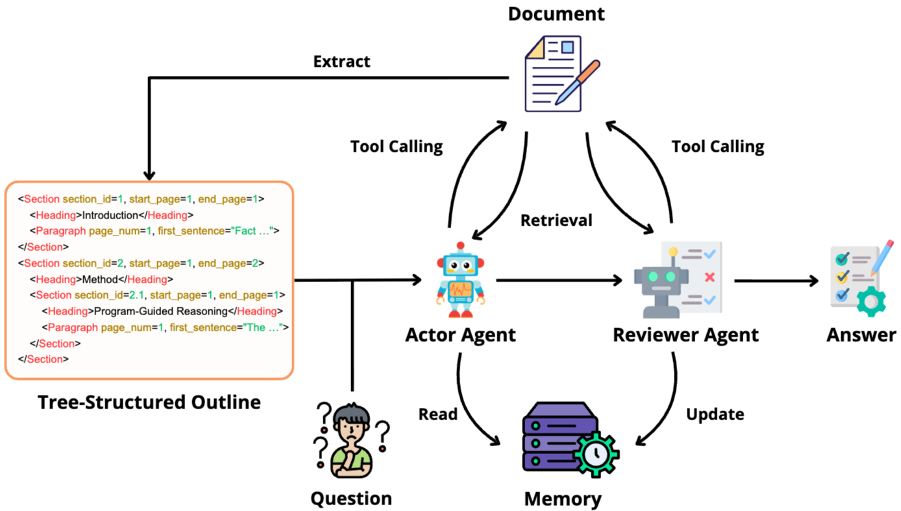
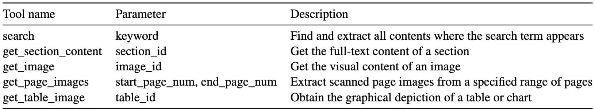
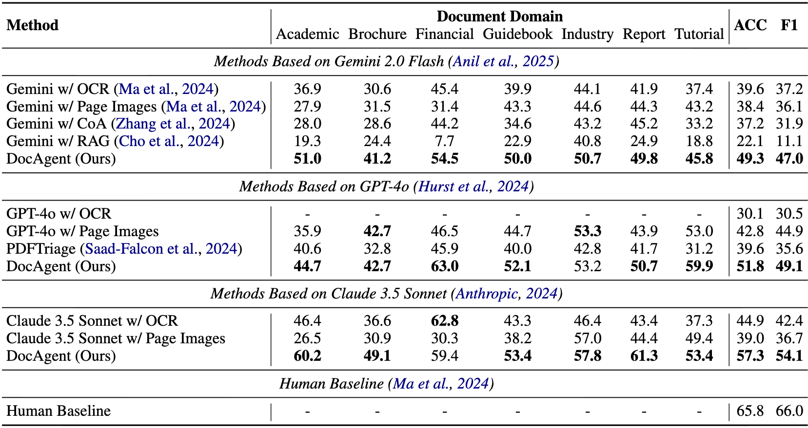
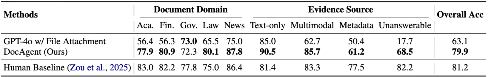
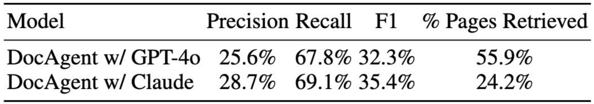
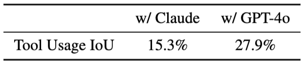
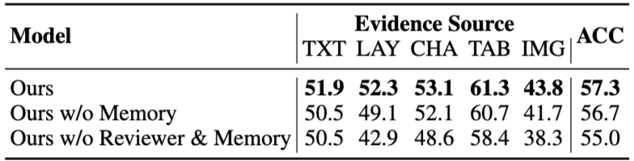
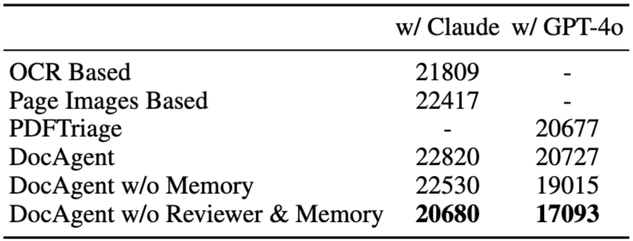
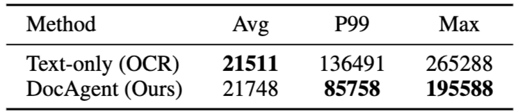
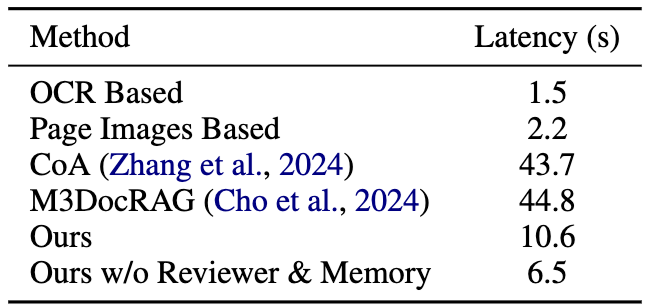

1. Problem setting
Understanding long documents is much harder than reading short text. In financial reports, legal contracts, academic papers, and technical manuals, important evidence is rarely confined to a single paragraph. Instead, it is distributed across pages, sections, tables, figures, charts, and layout structure. This creates three core challenges: documents are hierarchically structured, they contain multiple modalities (text, images, tables), and their length creates significant pressure on context limits and long-range reasoning. Previous approaches either work well only on short documents or fail to fully exploit multimodal signals—a gap that DocAgent is designed to address.
2. The core idea behind DocAgent
Human-like reading workflow:
- Inspect the outline to identify likely relevant sections
- Open the right parts of the document
- Verify the answer against figures, tables, or other sections
- Draw a conclusion only after cross-checking evidence
Four major components:
- Outline construction module: Represented as an XML tree for efficient navigation
- Actor agent: Searches for evidence and proposes an initial answer
- Reviewer agent: Checks the answer using additional tools and evidence
- Memory module: Distills guidelines from actor-reviewer disagreements to improve future runs

The outline as a reading map
One elegant design choice is that the system does not inject the full document into the prompt. Instead, it builds a structured outline where each section includes start and end page numbers, each paragraph shows only its first sentence as a context hint, each figure keeps only its caption, and each section, image, and table receives a unique identifier for later retrieval. This representation dramatically reduces the amount of context the model must carry at each step.
Tool use is what makes the system practical
Available tools for actor and reviewer:
- Retrieve the full content of a section
- Fetch an image or scanned page images from a page range
- Obtain the graphical rendering of a table or chart
- Impact: Makes DocAgent feel like a real document-reading system, not just a QA model

3. Experimental setup
DocAgent is evaluated on two long and multimodal benchmarks. The first is MMLongBench-Doc, which contains 135 PDF documents with an average length of 47.5 pages and 1,082 annotated questions. The second is DocBench, which contains 229 long documents and 1,102 questions across domains such as academia, finance, government, law, and news.
The baselines are reasonably strong and diverse: OCR + LLM, multimodal LLMs over page images, Chain-of-Agents, M3DocRAG, and PDFTriage. In other words, the paper does not win against a trivial baseline; it compares DocAgent against several serious approaches for long-document QA.


4. Main results
On MMLongBench-Doc, DocAgent delivers clear improvements over strong baselines. With GPT-4o as the backbone, the system reaches 51.8 ACC and 49.1 F1. With Claude 3.5 Sonnet, performance rises to 57.3 ACC and 54.1 F1. With Gemini 2.0 Flash, DocAgent achieves 49.3 ACC and 47.0 F1. The paper emphasizes that the improvement over the strongest baseline is 9% with GPT-4o and 12.4% with Claude 3.5 Sonnet.
On DocBench, the gain is even more striking: DocAgent reaches 79.9 accuracy, while GPT-4o with file attachment reaches 63.1. The remaining gap to the human baseline is only 1.3 percentage points. That is especially notable because DocBench spans multiple practical domains and demands stronger document reading capabilities than plain text QA.
One particularly interesting pattern is that the largest gains appear in document types rich in tables and charts, especially finance and report-style documents. That fits the design intuition well: the more a task requires cross-checking information across text, charts, and tables, the more valuable reviewer-based verification becomes.
5. Deeper analysis from the paper
Page-level retrieval quality
The paper goes beyond final accuracy and evaluates retrieval quality as well. With Claude as the backbone, DocAgent obtains 28.7% precision, 69.1% recall, and 35.4% F1 at the page level. Even more importantly, it accesses only 24.2% of the pages on average to answer a question. That is a strong sign that the combination of outline construction and tool-based retrieval genuinely reduces context usage rather than simply moving the cost elsewhere.

Actor and reviewer behave differently
According to the paper, the actor relies mostly on the search tool to quickly locate likely evidence, while the reviewer uses get_section_content more often to inspect the broader context in detail. With Claude 3.5 Sonnet, the overlap in tool categories used by the actor and reviewer is only about 15.3% IoU, which suggests that the reviewer is genuinely verifying the answer from a different angle rather than simply repeating the actor’s behavior.

Ablation results show both reviewer and memory matter
When memory is removed, or when both reviewer and memory are removed, performance drops. The reviewer appears to be especially helpful for multimodal evidence: the strongest gains are reported on layout (+6.2%) and chart (+3.5%) evidence types. That result is intuitive, because the reviewer is precisely the component responsible for cross-checking complementary evidence when the actor overlooks another modality.

Context efficiency and latency
In terms of average context usage, DocAgent is competitive with the baselines. When the reviewer and memory are disabled, the system becomes substantially more efficient while still outperforming many baselines. On the Gemini-based analysis, the paper reports that DocAgent reduces P99 context length by about 37% and maximum context length by about 26% relative to the OCR text-only baseline.
For latency, DocAgent is slower than a simple one-pass baseline, but still much faster than some multi-agent or RAG-heavy alternatives. When reviewer and memory are removed, latency drops from 10.6 seconds to 6.5 seconds — roughly a 30% reduction — while the paper describes the performance loss as a manageable trade-off for latency-sensitive deployment scenarios.



6. Strengths of the paper
- A very intuitive system design. Outline, retrieval, review, and memory are combined in a way that is easy to understand and easy to motivate.
- Stronger multimodal handling than text-only methods. This is one reason the method shines on documents with many tables and charts.
- Thorough analysis. The paper reports not only end-task accuracy, but also retrieval quality, tool usage, ablations, context usage, and latency.
- Practicality. The framework does not require training a new model from scratch; it can be paired with existing multimodal LLM backbones.
7. Limitations and open questions
Core claim vs. reality: Orchestration works, but orchestration ≠ solved multimodal reasoning. The framework does better search-and-verify, not faithful end-to-end reasoning.
1. Lossy document representation
- Outline abstraction is elegant but lossy
- If parser fails (noisy boundaries, incomplete captions, poor table rendering), the agent starts from a distorted view
- Better reasoning cannot compensate for bad evidence access
2. Retrieval precision vs. efficiency
- Paper shows DocAgent accesses only ~24% of pages—but is this because it found the right evidence, or because the LLM recovered from imperfect retrieval?
- Critical question: How much of the gain comes from better search, vs. backbone model's robustness to noise?
- Harder standard: System should answer correctly for the right evidential reasons, not just get lucky
3. Systems cost in production
- Multiple tool calls = higher latency and cost
- Trade-off acceptable in research; becomes core constraint in production
- Question: Does accuracy gain justify the orchestration overhead per deployment dollar?
4. Real-world generalization
- Paper tests on clean, English, long benchmarks
- Real documents are messy: multilingual, weak OCR, dense tables, low-quality scans
- These are not edge cases—they are the default in enterprise settings
- Open question: How robust is DocAgent to unreliable document representation?
8. Our perspective
Why this paper matters:
- Conceptual shift: From "How much context can the model hold?" to "Where should the system look?"
- Old framing: Bigger context window → better performance
- DocAgent framing: Orchestration, retrieval strategy, and verification → better performance
Current field direction:
- Problem is no longer just context length
- New bottlenecks: Faithful cross-modal composition, structure-aware retrieval, robustness to noisy parsing
- Emerging benchmarks (LongDocURL, DocDancer) require numerical reasoning and precise element locating, not just reading comprehension
DocAgent in this landscape:
- Strong transition paper, not final answer
- Proves: orchestration matters, verification works, process-based reasoning beats single-pass
- Leaves unanswered: How to preserve document structure faithfully for grounded reasoning?
- Value: Clarifies what the real problem is, not that it solves it
9. Final thoughts
What DocAgent is:
- Strong systems paper, not a definitive solution
- Conceptually clear: orchestration + verification as a design principle
- Experimentally rigorous: reports not just accuracy, but retrieval, cost, latency trade-offs
The real value:
- Exposes the next bottleneck in document AI
- Once we stop treating QA as a context-window problem, harder questions emerge:
- Can the system preserve document structure faithfully?
- Can it locate right evidence across pages and modalities?
- Can it ground answers in evidence, not just get lucky?
Where the field is heading:
- Broader benchmarks with numerical reasoning (LongDocURL, DocDancer)
- Trainable agents, not just prompt-engineered pipelines
- Focus on faithfulness and transparency, not just accuracy
- Future success = faithfulness + precision + robustness to noise, not context size
Bottom line: DocAgent is an important step. It does not finish the story, but it defines what the next chapter must solve.